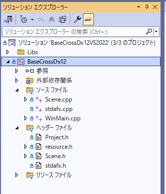

BaseCrossDx12ドキュメント
【Sample000】Emptyプロジェクト
このサンプルは
Samples/Sample000ディレクトリ内にあります。VisualStdioで該当ソリューション（VS2022で
BaseCrossDx12VS2022.sln）を開いてください。ビルド後実行すると、以下の画面が現れます。
Escキーを押すか
×ボタンで終了します。
Altを押しながら
Enterで、全画面に変更できます。Windowモードに戻すときは、再び
Altを押しながら
Enterを押します。
Emptyプロジェクトとは
Emptyプロジェクトとは、ゲーム制作開始時の
何も表示しないプロジェクトを指します。
何も表示しないと言っても、フレームワークごとの特有の情報や仕組みが実装されているのが通常です。
BaseCrossDx12も例外ではなく、現在の
FPS値とElapsedTime値が表示されています。
Sample000のように
Sample0..で始まるサンプルは、ベーシックなサンプルです。
DirectX12オブジェクトもある程度作らなければいけません。
Sample101のように
Sample1..で始まるサンプルは、ゲームステージ、コンポーネントなど、ある程度
個別ライブラリの形でそろっています（スタンダードサンプル）。BaseCrossの前バージョンである
BaseCross64を使った時がある人はわかると思いますが、そのままゲーム制作を始められます。
Emptyプロジェクトの内容
Emptyプロジェクトのソリューションは以下の通りです。

Libsの中は、ベーシックバージョンのライブラリです。
ソース ファイルおよびヘッダー ファイルがコンテンツ側の内容ですが、見てみるとほとんど記述がありません。
まず一番重要な
Scene.h/cppを見てみます
Scene.h
/*!
@file Scene.h
@brief シーンクラス
*/
#pragma once
#include "stdafx.h"
#include "Project.h"
namespace basecross {
//--------------------------------------------------------------------------------------
// シーン
//--------------------------------------------------------------------------------------
class Scene : public BaseScene
{
public:
//--------------------------------------------------------------------------------------
/*!
@brief コンストラクタ
@param[in] frameCount フレーム数
@param[in] pPrimDevice デバイス
@return なし
*/
//--------------------------------------------------------------------------------------
Scene(UINT frameCount, PrimDevice* pPrimDevice);
virtual ~Scene();
protected:
//--------------------------------------------------------------------------------------
/*!
@brief コンテンツの作成
@param[in] pDevice デバイス
@param[in] pCommandList コマンドリスト
@return なし
*/
//--------------------------------------------------------------------------------------
virtual void CreateAssetResources(ID3D12Device* pDevice, ID3D12GraphicsCommandList* pCommandList)override {}
//--------------------------------------------------------------------------------------
/*!
@brief 更新処理
@param[in] elapsedTime 前のターンからの時間
@return なし
*/
//--------------------------------------------------------------------------------------
virtual void Update(double elapsedTime)override {}
//--------------------------------------------------------------------------------------
/*!
@brief コンスタントバッファの更新
@return なし
*/
//--------------------------------------------------------------------------------------
virtual void UpdateConstantBuffers()override {}
//--------------------------------------------------------------------------------------
/*!
@brief コンスタントバッファのコミット
@return なし
*/
//--------------------------------------------------------------------------------------
virtual void CommitConstantBuffers()override {}
//--------------------------------------------------------------------------------------
/*!
@brief UIの更新
@param[in] uiLayer UIレイヤー
@return なし
*/
//--------------------------------------------------------------------------------------
virtual void UpdateUI(std::unique_ptr& uiLayer)override;
//--------------------------------------------------------------------------------------
/*!
@brief シャドウマップの描画
@param[in] コマンドリスト
@return なし
*/
//--------------------------------------------------------------------------------------
virtual void ShadowPass(ID3D12GraphicsCommandList* pCommandList)override {}
//--------------------------------------------------------------------------------------
/*!
@brief シーンの描画
@param[in] コマンドリスト
@return なし
*/
//--------------------------------------------------------------------------------------
virtual void ScenePass(ID3D12GraphicsCommandList* pCommandList) {}
};
}
//end namespace basecross
よく見ると
CreateAssetResources()、Update()、UpdateConstantBuffers()、CommitConstantBuffers()、ShadowPass()、ScenePass()は、実体をもってない（というか何もしない）のがわかります。
この6つの関数をコンテンツに合った形で記述すれば、様々なオブジェクトを管理、表示することができます。
以下は
Scene.cppの実装です。
Scene.cpp
/*!
@file Scene.cpp
@brief シーンクラス 実体
*/
#include "stdafx.h"
#include "Project.h"
namespace basecross {
//--------------------------------------------------------------------------------------
// シーン
//--------------------------------------------------------------------------------------
Scene::Scene(UINT frameCount, PrimDevice* pPrimDevice) :
BaseScene(frameCount, pPrimDevice)
{
}
Scene::~Scene()
{
}
void Scene::UpdateUI(std::unique_ptr<UILayer>& uiLayer) {
auto device = BaseDevice::GetBaseDevice();
//1秒間に１回更新される安定したfpsを得る
auto fps = device->GetStableFps();
//1秒間に１回更新される安定したelapsedTimeを得る
auto elapsedTime = device->GetStableElapsedTime();
std::wstring uiText = L"";
wchar_t buff[512];
swprintf_s(buff, 500, L"FPS: %.1f\n", fps);
uiText = buff;
swprintf_s(buff, 500, L"ElapsedTime: %.6f\n", elapsedTime);
uiText += buff;
uiLayer->UpdateLabels(uiText);
}
}
// end namespace basecross
BaseCrossDx12で最低限必要なコンテンツ側の処理はこれだけです。
UpdateUI()関数は、デバッグ文字列として
FPSとElapsedTimeを表示します。もし何も表示したくなければ
void Scene::UpdateUI(std::unique_ptr<UILayer>& uiLayer) {
uiLayer->UpdateLabels(L"");
}
と書けば問題ありません。
他のファイル
Project.hはほぼ何も書かれてないですし、
resource.h、stdafx.h、stdafx.cpp、WinMain.cppは、サンプルが変わっても同じ内容です。